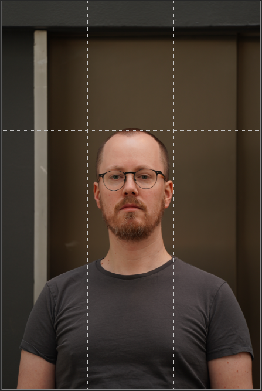
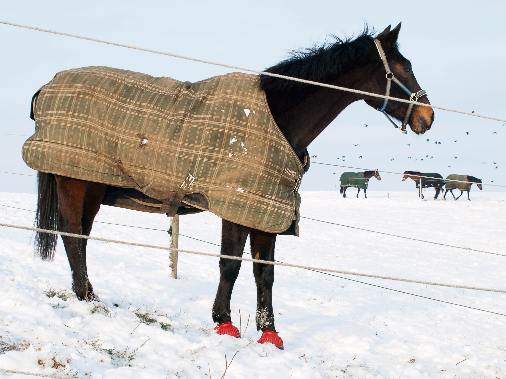
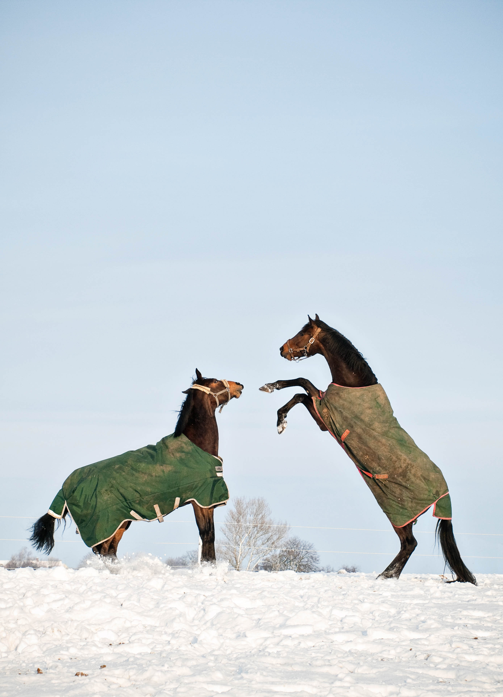

Composing an image
When composing an image there are several factors that play a role. Some are related directly to the way the equipment work and some would be relevant for all types of images. Of the latter are ideas like rule-of-thirds, perspective and symmetry and of the former we could mention focal length, which is related to the way lenses work.
Rule-of-thirds
In composing an image it is always a matter of how to balance the content. Where to place the main subject. In the rule-of-thirds approach, you’d place the main subject on one of the two lines that would appear, if you divided the image fra vertically in three equal parts. This seems to offer a well balanced view in most cases.
Perspective
In order to understand the otherwise flat image as a three-dimensional reality, perspective is important. This is often done by placing some element in the front and some element in the back, while the main subject is placed in between these two.
Symmetry
Composing an image using symmetry means that the two parts of the image will be perceived as holding the same weight. It does not necessarily mean a mirroring of the two sides, but can be achieved some content being fairly similar or similar shapes on both sides.
Depth-of-field
When working with photography, you cannot avoid working with depth-of-field. The DoF is referring to which part of a picture that would be in focus and it is counted in a straight line directly away from the camera lens. The wider the DoF the greater a part of the image would be in focus. Dof is controlled by the aperture setting. A high aperture (f/1.4) would create a narrow DoF, while a low aperture (f/22) would create a wide DoF.